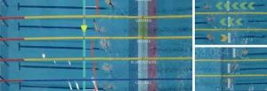

Designing for Visualization in Motion: Embedding Visualizations in Swimming Videos
Lijie Yao, Romain Vuillmot, Anastasia Bezerianos, Petra Isenberg
IEEE Transactions on Visualization and Compputer Graphics, 2024, 30(3), pp.1821-1836, doi: 10.1109/tvcg.2023.3341990.

We report on challenges and considerations for supporting design processes for visualizations in motion embedded in sports videos. We derive our insights from analyzing swimming race visualizations and motion-related data, building a technology probe, as well as a study with designers. Understanding how to design situated visualizations in motion is important for a variety of contexts. Competitive sports coverage, in particular, increasingly includes information on athlete or team statistics and records. Although moving visual representations attached to athletes or other targets are starting to appear, systematic investigations on how to best support their design process in the context of sports videos are still missing. Our work makes several contributions in identifying opportunities for visualizations to be added to swimming competition coverage but, most importantly, in identifying requirements and challenges for designing situated visualizations in motion. Our investigations include the analysis of a survey with swimming enthusiasts on their motion-related information needs, an ideation workshop to collect designs and elicit design challenges, the design of a technology probe that allows to create embedded visualizations in motion based on real data, and an evaluation with visualization designers that aimed to understand the benefits of designing directly on videos.
Visualization in Motion: A Research Agenda and Two Evaluations
Lijie Yao, Anastasia Bezerianos, Romain Vuillmot, Petra Isenberg
IEEE Transactions on Visualization and Compputer Graphics, 2022, 28(10), pp.3546-3562, doi: 10.1109/TVCG.2022.3184993.

We contribute a research agenda for visualization in motion and two experiments to understand how well viewers can read data from moving visualizations. We define visualizations in motion as visual data representations that are used in contexts that exhibit relative motion between a viewer and an entire visualization. Sports analytics, video games, wearable devices, or data physicalizations are example contexts that involve different types of relative motion between a viewer and a visualization. To analyze the opportunities and challenges for designing visualization in motion, we show example scenarios and outline a first research agenda. Motivated primarily by the prevalence of and opportunities for visualizations in sports and video games we started to investigate a small aspect of our research agenda: the impact of two important characteristics of motion---speed and trajectory on a stationary viewer's ability to read data from moving donut and bar charts. We found that increasing speed and trajectory complexity did negatively affect the accuracy of reading values from the charts and that bar charts were more negatively impacted. In practice, however, this impact was small: both charts were still read fairly accurately.
Envisioning Situated Visualizations of Environmental Footprints in an Urban Environment
Yvonne Jansen, Federica Bucchieri, Pierre Dragicevic, Martin Hachet, Morgane Koval, Léana Petiot, Arnaud Prouzeau, Dieter Schmalstieg, Lijie Yao, Petra Isenberg
In Proceeding of IEEE VIS 2022 Workshop on Visualization for Social Good workshop (VIS4Good), October 2022, Oklahoma, United States.
We present the results of a brainstorming exercise focused on how situated visualizations could be used to better understand the state of the environment and our personal behavioral impact on it. Specifically, we conducted a day long workshop in the French city of Bordeaux where we envisioned situated visualizations of urban environmental footprints. We explored the city and took photos and notes about possible situated visualizations of environmental footprints that could be embedded near places, people, or objects of interest. We found that our designs targeted four purposes and used four different methods that could be further explored to test situated visualizations for the protection of the environment.
Reflections on Visualization in Motion for Fitness Trackers
Alaul Islam*, Lijie Yao*, Anastasia Bezerianos, Tanja Blascheck, Tingying He, Bongshin Lee, Romain Vuillmot, Petra Isenberg
In Proceeding of MobileHCI 2022 Workshop on New Trends in HCI and Sports (NTSPORT), September 2022, Vancouver, Canada.
In this paper, we reflect on our past work towards understanding how to design visualizations for fitness trackers that are used in motion. We have coined the term "visualization in motion" for visualizations that are used in the presence of relative motion between a viewer and the visualization. Here, we describe how visualization in motion is relevant to sports scenarios. We also provide new data on current smartwatch visualizations for sports and discuss future challenges for visualizations in motion for fitness trackers.
Situated Visualization in Motion for Video Games
Federica Bucchieri, Lijie Yao, Petra Isenberg
Posters of the European Conference on Visualization (EuroVis), June 2022, Rome, Italy, doi: 10.2312/evp.20221119.
We contribute a systematic review of situated visualizations in motion in the context of video games. Video games produce rich dynamic datasets during gameplay that are often visualized to help players succeed in a game. Often these visualizations are moving either because they are attached to moving game elements or due to camera changes. We want to understand to what extent this motion and contextual game factors impact how players can read these visualizations. In order to ground our work, we surveyed 160 visualizations in motion and their embeddings in the game world. Here, we report on our analysis and categorization of these visualizations.
Situated Visualization in Motion for Swimming
Lijie Yao, Anastasia Bezerianos, Romain Vuillmot, Petra Isenberg
Posters of the France National Conference on Visualization (Journée Visu), June 2022, Bordeaux, France.

Competitive sports coverage increasingly includes information on athlete or team statistics and records. Sports video coverage has traditionally embedded representations of this data in fixed locations on the screen, but more recently also attached representations to athletes or other targets in motion. These publicly used representations so far have been rather simple and systematic investigations of the research space of embedded visualizations in motion are still missing. Here we report on our preliminary research in the domain of professional and amateur swimming. We analyzed how visualizations are currently added to the coverage of Olympics swimming competitions and then plan to derive a design space for embedded data representations for swimming competitions. We are currently conducting a crowdsourced survey to explore which kind of swimming-related data general audiences are interested in, in order to identify opportunities for additional visualizations to be added to swimming competition coverage.
Visualization in Motion in Video Games for Different Types of Data
Federica Bucchieri, Lijie Yao, Petra Isenberg
Posters of the France National Conference on Visualization (Journée Visu), June 2022, Bordeaux, France.
We contribute an analysis of situated visualizations in motion in video games for different types of data, with a focus on quantitative and categorical data representations. Video games convey a lot of data to players, to help them succeed in the game. These visualizations frequently move across the screen due to camera changes or because the game elements themselves move. Our ultimate goal is to understand how motion factors affect visualization readability in video games and subsequently the players' performance in the game. We started our work by surveying the characteristics of how motion currently influences which kind of data representations in video games. We conducted a systematic review of 160 visualizations in motion in video games and extracted patterns and considerations regarding was what, and how visualizations currently exhibit motion factors in video games.
Situated Visualization in Motion
Lijie Yao, Anastasia Bezerianos, Petra Isenberg
Posters of the IEEE Conference on Visualization, October 2020, Salt Lake City, United States.
We contribute a first design space on visualizations in motion and the design of a pilot study we plan to run in the fall. Visualizations can be useful in contexts where either the observation is in motion or the whole visualization is moving at various speeds. Imagine, for example, displays attached to an athlete or animal that show data about the wearer – for example, captured from a fitness tracking band; or a visualization attached to a moving object such as a vehicle or a soccer ball. The ultimate goal of our research is to inform the design of visualizations under motion.